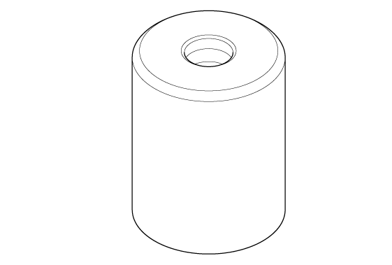
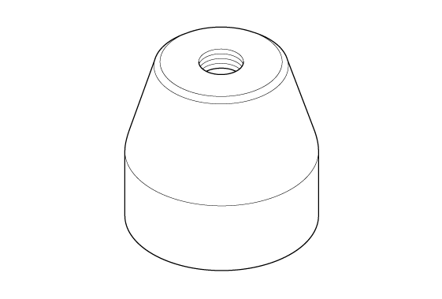

LEMON Manuals
: Even more car manuals for everyone: 1960-2025
Home
>>
Honda
>>
2016
>>
Civic LX, 4D Sedan, Automatic CVT Trans
>>
Repair and Diagnosis (Single Page)
>>
Steering
>>
Power Steering
>>
Steering System - Testing & Troubleshooting
>>
Inspection Replacement
>>
Ball Joint Boot Replacement and Inspection (Type-R) (2017 2018 2019 2020 2021)
>>
Notes
Ball Joint Boot Replacement and Inspection (Type-R) (2017 2018 2019 2020 2021): Notes
Special Tools Required
Image
Description/Tool Number

Courtesy of HONDA, U.S.A., INC.
Bearing Driver Attachment, 36 mm 07965-SA50500

Courtesy of HONDA, U.S.A., INC.
Clip Guide, 45 mm 070AG-SJA0300